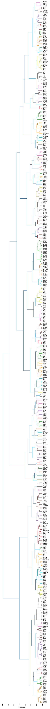

from katlas.clustering import *
from katlas.data import *
from katlas.feature import *
from katlas.plot import *
import pandas as pd, numpy as npKinase T5 hierarchy
info=Data.get_kinase_info()info.shape(523, 36)info.columnsIndex(['kinase', 'ID_coral', 'uniprot', 'gene', 'modi_group', 'group',
'family', 'subfamily_coral', 'subfamily', 'in_pspa_st', 'in_pspa_tyr',
'in_pspa', 'in_cddm', 'kd_ID', 'active_D1_D2', 'active_kd_ID',
'pspa_ID', 'pseudo', 'pspa_category_small', 'pspa_category_big',
'cddm_big', 'cddm_small', 'length', 'human_uniprot_sequence',
'kinasecom_domain', 'nucleus', 'cytosol', 'cytoskeleton',
'plasma membrane', 'mitochondrion', 'Golgi apparatus',
'endoplasmic reticulum', 'vesicle', 'centrosome', 'aggresome',
'main_location'],
dtype='object')info=info[info.human_uniprot_sequence.str.len()<5000]info = info[~info.kinase.str.contains('_b|_2')].reset_index(drop=True)info[info.human_uniprot_sequence.duplicated(keep=False)]| kinase | ID_coral | uniprot | gene | modi_group | group | family | subfamily_coral | subfamily | in_pspa_st | ... | cytosol | cytoskeleton | plasma membrane | mitochondrion | Golgi apparatus | endoplasmic reticulum | vesicle | centrosome | aggresome | main_location |
|---|
0 rows × 36 columns
info.shape(507, 36)T5 embeddings
feature = get_t5(info,'human_uniprot_sequence')You are using the default legacy behaviour of the <class 'transformers.models.t5.tokenization_t5.T5Tokenizer'>. This is expected, and simply means that the `legacy` (previous) behavior will be used so nothing changes for you. If you want to use the new behaviour, set `legacy=False`. This should only be set if you understand what it means, and thoroughly read the reason why this was added as explained in https://github.com/huggingface/transformers/pull/24565feature.index=info.kinasefeature/home/sky1ove/git/katlas/.venv/lib/python3.11/site-packages/pandas/io/formats/format.py:1458: RuntimeWarning: overflow encountered in cast
has_large_values = (abs_vals > 1e6).any()
/home/sky1ove/git/katlas/.venv/lib/python3.11/site-packages/pandas/io/formats/format.py:1458: RuntimeWarning: overflow encountered in cast
has_large_values = (abs_vals > 1e6).any()| T5_0 | T5_1 | T5_2 | T5_3 | T5_4 | T5_5 | T5_6 | T5_7 | T5_8 | T5_9 | ... | T5_1014 | T5_1015 | T5_1016 | T5_1017 | T5_1018 | T5_1019 | T5_1020 | T5_1021 | T5_1022 | T5_1023 | |
|---|---|---|---|---|---|---|---|---|---|---|---|---|---|---|---|---|---|---|---|---|---|
| kinase | |||||||||||||||||||||
| AAK1 | 0.056274 | 0.066528 | 0.077576 | 0.010185 | -0.030762 | 0.044861 | -0.051788 | -0.030167 | 0.010437 | -0.007874 | ... | -0.041718 | -0.077393 | -0.023361 | 0.012962 | 0.071716 | 0.008446 | -0.071045 | 0.019363 | -0.003197 | -0.012413 |
| AATK | -0.001738 | -0.028183 | 0.055511 | -0.012909 | -0.004894 | 0.032166 | -0.033936 | -0.048676 | 0.076843 | 0.034058 | ... | -0.000751 | -0.036194 | -0.026352 | -0.017014 | 0.009399 | 0.035736 | 0.017212 | -0.013489 | 0.022949 | 0.079773 |
| ABL1 | 0.009750 | 0.011368 | 0.031204 | -0.000709 | 0.005157 | 0.050629 | -0.024017 | -0.036987 | 0.051483 | -0.007980 | ... | -0.014618 | -0.024673 | -0.048248 | -0.004753 | 0.032166 | 0.025558 | 0.004871 | 0.044006 | 0.001851 | 0.019043 |
| ABL2 | 0.008217 | 0.000241 | 0.022705 | 0.001262 | -0.000204 | 0.052795 | -0.032806 | -0.038849 | 0.049347 | -0.011520 | ... | -0.002037 | -0.031036 | -0.051117 | -0.022949 | 0.030548 | 0.041412 | 0.009804 | 0.040649 | 0.008743 | 0.020920 |
| ACVR1C | 0.034943 | 0.098511 | 0.053558 | 0.030258 | -0.021255 | 0.037415 | -0.036346 | -0.066162 | 0.010223 | 0.014893 | ... | -0.046600 | -0.028793 | -0.036743 | -0.018906 | 0.032532 | -0.008156 | -0.035187 | -0.028793 | -0.036469 | -0.001018 |
| ... | ... | ... | ... | ... | ... | ... | ... | ... | ... | ... | ... | ... | ... | ... | ... | ... | ... | ... | ... | ... | ... |
| YES1 | 0.034882 | 0.097534 | 0.042877 | 0.006760 | -0.010063 | 0.031708 | -0.026627 | -0.045990 | -0.003342 | -0.009605 | ... | -0.005806 | -0.012741 | -0.073730 | -0.015350 | 0.057709 | -0.006027 | -0.010864 | 0.000340 | -0.019440 | -0.009087 |
| YSK1 | 0.049072 | 0.081970 | 0.022079 | 0.004959 | 0.005402 | 0.022247 | -0.024216 | -0.041168 | -0.027023 | -0.015083 | ... | -0.042480 | -0.012794 | -0.062805 | 0.015465 | 0.053314 | -0.032227 | -0.030594 | -0.006836 | -0.013931 | -0.002098 |
| YSK4 | 0.020233 | 0.008957 | -0.014725 | 0.008110 | -0.047638 | 0.103333 | -0.125122 | -0.036072 | 0.096313 | 0.116821 | ... | -0.030411 | 0.026611 | -0.003803 | -0.117493 | 0.024155 | 0.078491 | -0.027466 | -0.031097 | 0.033295 | 0.031281 |
| ZAK | 0.018494 | -0.002581 | 0.020844 | 0.016388 | -0.000139 | 0.032074 | -0.020218 | -0.073669 | 0.009033 | 0.002945 | ... | -0.027176 | -0.002493 | -0.028015 | -0.046295 | 0.044434 | -0.014023 | -0.022934 | -0.014511 | 0.018829 | -0.018219 |
| ZAP70 | -0.000020 | 0.044403 | 0.035492 | 0.002699 | -0.034668 | 0.023911 | -0.002527 | -0.042755 | 0.017273 | -0.028473 | ... | -0.009987 | -0.017853 | -0.021210 | -0.037598 | 0.038208 | 0.014702 | -0.008934 | 0.003305 | -0.043549 | 0.002966 |
507 rows × 1024 columns
feature.to_parquet('raw/kinome_t5.parquet')Feature
feature = pd.read_parquet('raw/kinome_t5.parquet')def euclidean_flat(a, b):
"""Compute Euclidean distance between two flattened arrays."""
# a = np.ravel(a)
# b = np.ravel(b)
return np.linalg.norm(a - b)Z = get_Z(feature,func_flat=euclidean_flat)labels=feature.indexplot_dendrogram(Z,dense=6,labels=labels,color_thr=1.1)
save_svg('raw/kinase_hierarchy.svg')